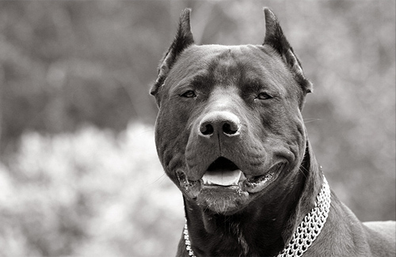
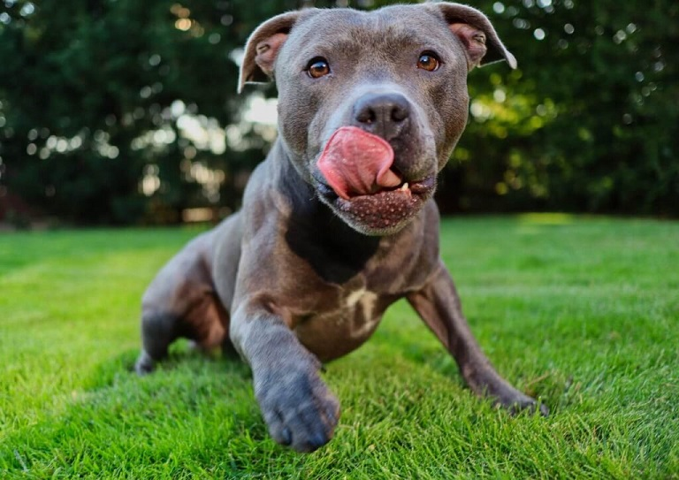

Американський Пітбультер’єр: Походження, Характер та Особливості
Походження породи американського пітбультер’єра
Американський пітбультер’єр є однією з так званих порід булів, які часто називають пітбуль. Тоді як назва
«пітбуль» - це не одна порода, а термін, який використовують для опису американського пітбультер’єра,
бультер’єра, американського стаффордширського тер’єра та стаффордширського бультер’єра - представників булів.
Пітбультер’єри походять від двох груп – буль та тер’єри – тоді селекціонери почали схрещувати бульдогів і
тер’єрів. В результаті вони хотіли розробити собаку, яка поєднувала б веселий характер, сміливість та спритність
тер’єра та силу, міцність та вольовитість бульдога. Такими і вийшла порода пітбультер’єрів.
На жаль, в 19
столітті виникла і зросла популярність спорту боїв собак з дикими тваринами як цькування биків і
ведмедів, в яких залучали пітбультер’єрів. В 1835 році ці бої були заборонені, як незаконні та жорстокі
знущання. Але на їх місці виникли не менш жорстокі собачі бої, де так само використовували пітбулів. І часто
через таке минуле поширений міф, що собача агресія ввійшла в генетичну лінію пітбулів. Проте навіть в ті часи
пітбулі вважались не агресивними до людей, а навпаки безстрашно виконували будь-які команди. На щастя, бої стали
забороненими, а порода набула більше статусу сімейного ніжного улюбленця і охоронця.
Американський пітбультер’єр: характер
Американський пітбультер’єр – це, однозначно, собака-компаньйон і сімейна порода, яка дуже орієнтована на людину. Виведені для «приманки» на биків, ця порода і отримала назву породи биків (“bully type” – більше поширена ця назва в США). З часом порода перетворилась на універсальних фермерських собак, ще більше прив’язуючись до людей, а згодом перетворились на «собак-нянь». Пітбультер’єри дуже лагідні, турботливі і ніжні з дітьми, і не менш люблячі і прив’язані до своєї родини.